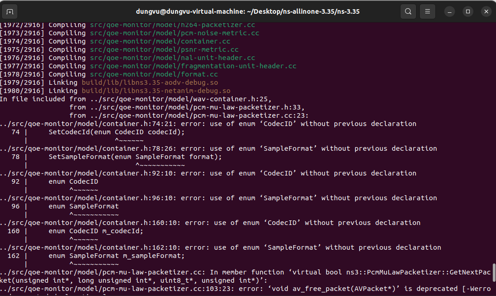
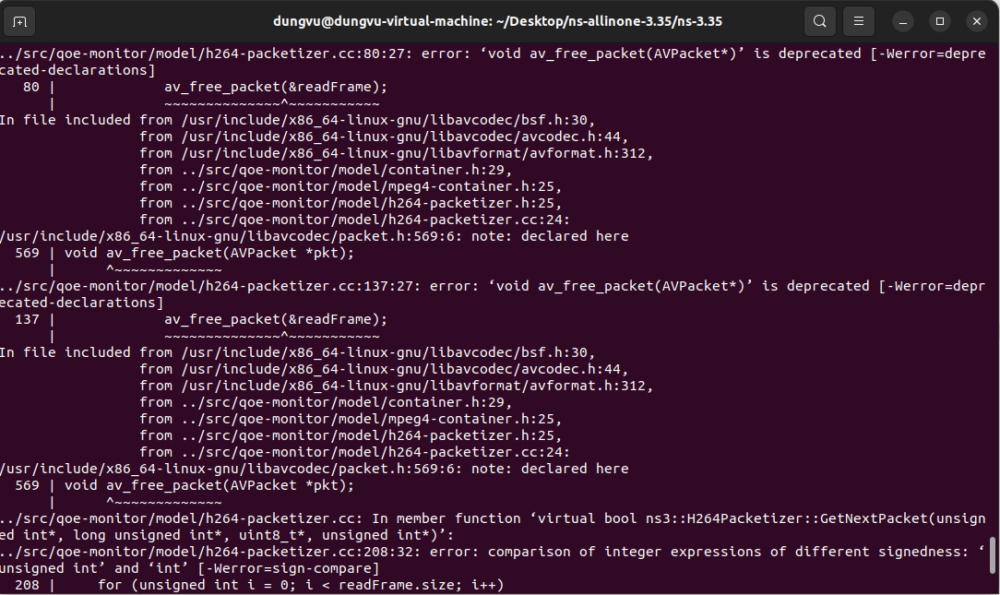
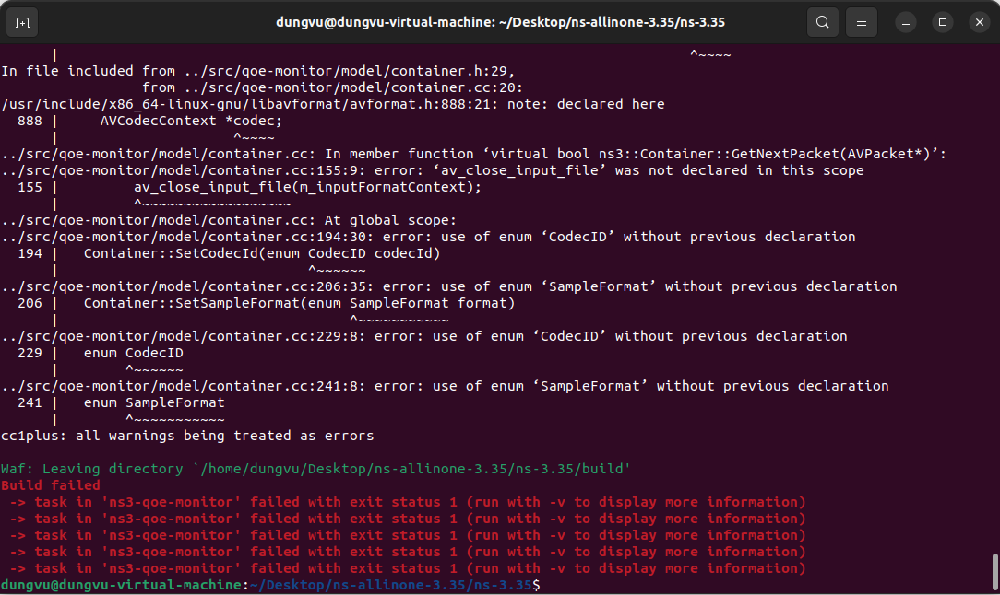

Slide: A tool for multimedia quality assessment in NS3: QoE Monitor
Tool: QoE Monitor
1. Run examples on the QoE Monitor tool
2. My opinion about the examples
3. My idea to improve this tool
-Read and understood what to do following the above slide
-Installed Ubuntu
-Installed NS3
-Installed QoE Monitor
-Unable to run the examples following the images:
  -I will try to google search about my error to fix the above problem.
-I will try to study more about the PSNR and SSIM to understand more about it (I still didn't get it clearly)